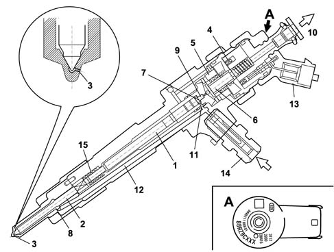

1060F INJECTORS AND LINES
- Path
- Descriptions > 10 ENGINE UNIT > 1060 DIESEL INJECTION SYSTEM > 1060F INJECTORS AND LINES
- Kind
- system description
- Applies to
- engines: 1.9 JTD 16V; all production periods
- Interactive page
- https://sloeber94.github.io/elrnDB-aGt/en/#/125000286
Applies to: engines: 1.9 JTD 16V; all production periods
COMPONENT DESCRIPTION
INJECTORS
The injectors are fitted on the cylinder head and operated by the injection control unit.
The injectors can be divided into two sections:
- actuator/nozzle consisting of a pressure rod (1), pin (2) and jet (3);
- solenoid valve consisting of a coil (4) and pilot valve (5).
The operation of the injector can be divided into three stages.
REST POSITION. The coil (4) is de-energized and the shutter (6) is in the closed position and does not allow the introduction of fuel into cylinder Fc > Fa (Fc: due to the line pressure acting on control area 7 of the rod 1; Fa: due to the line pressure acting in supply volume (8).
START OF INJECTION, the coil (4) is energized and causes the shutter (6) to be raised.
The control volume (9) fuel flows towards the return manifold (10) causing a decrease in pressure in the control area (7). At the same time, the line pressure exerts a force Fa > Fc in the supply volume (8), via the supply duct (12), causing the raising of the pin (2) with the consequent introduction of fuel into the cylinders.
END OF INJECTION. The coil (4) is de-energized and returns the shutter (6) to the closed position which recreates an equilibrium with forces which return the pin (2) to the closed position and consequently end the injection.
Ima classification
During the test stage the injector specifications are checked in different pressure/flow rate conditions. Any injectors that do not meet a certain standard are discarded; the remaining ones are classified ausing an alphanumerical code with nine digits known as an IMA code etched by laser on the top part of the magnet.
When fitted in the vehicle the control unit must memorize the individual code and if one or more of the injectors is replaced in a service situation the different code must be entered during diagnosis using the diagnostic equipment.

1 - Pressure rod
2 - Pin
3 - Nozzle ('no. 6)'
4 - Coil
5 - Valve
6 - Spherical plunger
7 - Control area
8 - Supply volume
9 - Control volume
10 - Fuel return - low pressure
11 - Control duct
12 - Supply duct
13 - Electrical connection
14 - Fuel inlet connector - high pressure
15 - Spring
SINGLE FUEL MANIFOLD PIPE
The single fuel manifold pipe (rail) is fitted on the inlet side cylinder head.
With its volume of around 33 cm3 it dampens the fuel pressure oscillations due to:
- the operation of the pressure pump
- injector opening.
The fuel pressure sensor is fitted at the centre of the supply manifold
Characteristic of working principle 1060G PRESSURE PUMP ELECTRIC CONTROL
.
The (high pressure) hydraulic connections between the manifold-pump and manifold-injectors are made by means of steel pipes with an internal diameter of 2 mm and an external diameter of 6 mm.